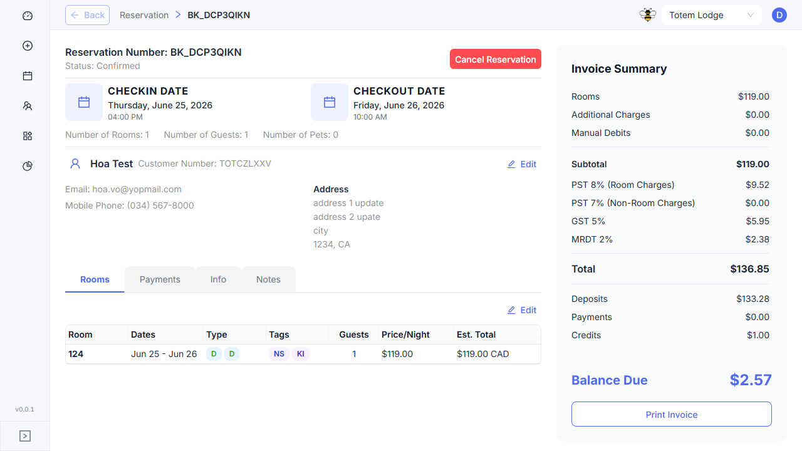
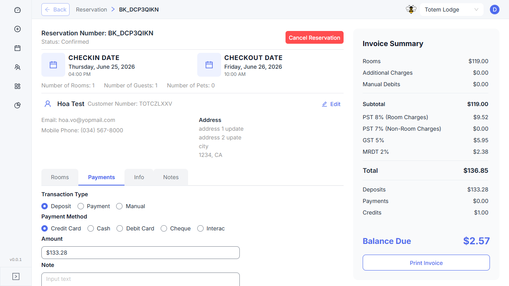

run-qa-feature-workabee-dev-001 · env: https://xin-np.wbee.ca/ · 2026-06-29
Four TCs pass with direct API evidence. Two need review (require special test data for orphaned booking item / CLOSED status bookings). One blocked (headless mode — POST mutation skipped; indirect evidence strong).
Parent ticket for Sales Order integration when adding a booking item. Four sub-tickets:
| TC ID | Title | Status | Evidence | Notes |
|---|---|---|---|---|
TC-0592-001 |
POST /booking/item triggers SO resync | BLOCKED | api-booking-item-so-integration.json | Headless: mutation skipped. Indirect evidence: booking_item_id=1 linked to SO line item id=1 confirms resync (INV-593 SN16) ran at creation. |
TC-0592-002 |
POST /so/lineitem validates CURR_BI.booking_id ≠ null | NEEDS-REVIEW | api-so-lineitem-validation.json | INV-594: SN25 fix path requires orphaned booking item (booking_id=null). Required field validation fires first. Positive path confirmed via TC-0592-005. |
TC-0592-003 |
PUT /so/lineitem/resync creates/updates SO line items | PASS | api-so-lineitem-resync.json | 200 OK, 9 line items returned. UPDATE path ✅. INV-595 SN11 table fix confirmed by correct data. CREATE NEW path not tested (all BIs already have SO lines). |
TC-0592-004 |
PUT /so/resync handles no-SO + status transitions | PASS | api-so-resync.json | 200 OK, DRAFT→CONFIRMED transition for CONFIRMED booking ✅ (INV-596 SN27). CLOSED status paths not testable on current dataset. |
TC-0592-005 |
GET /so/invoice — line items populated, payment_type present | PASS | api-so-transactions.json + 2 screenshots | ROOM_CHARGE linked (booking_item_id=1), payment_type field on all items, tax math reconciles ($119→$136.85→$2.57 due). UI Invoice Summary matches API exactly. |
TC-UV-1 |
Console Error Scan | PASS | console-errors.json | 1 error (Cognito favicon 404) — third-party allowlisted. No application errors. |
TC-UV-2 |
Network Error Scan | PASS | non-2xx.json | All application API calls returned 200 during session. |
payment_type field present on all SO line items (null for ROOM_CHARGE, populated for DEPOSIT/MANUAL_CREDIT). INV-595 field shape correct.
TC-0592-005: Reservation BK_DCP3QIKN (Rooms Tab)

TC-0592-005: Reservation BK_DCP3QIKN (Payments Tab)
| Setup + Authentication | ~2 min |
| Manifest Build | ~3 min |
| API Test Execution | ~4 min |
| Evidence Write | ~1 min |
| Total Pipeline | ~10 min |